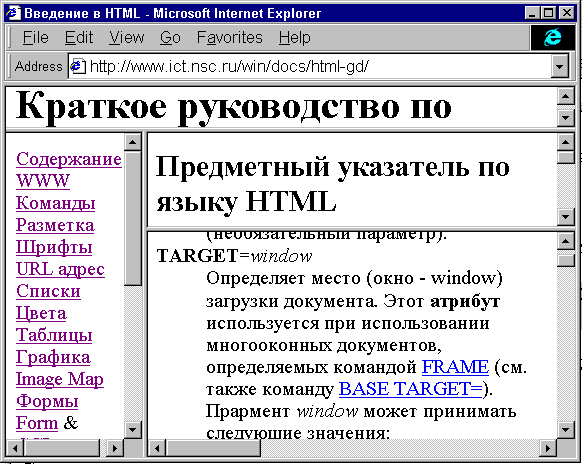

<TABLE> <TR> <TD>Яблоки</TD><TD>Огурцы</TD> </TR> <TR> <TD>Апельсины<TD></TD>Помидоры</TD> </TR> </TABLE> |
Что даст:
| Яблоки | Огурцы |
| Апельсины | Помидоры |
По умолчанию таблица прижимается (align) влево, ширина таблицы определяется наиболее длинным элементом в столбце, содержание каждой ячейки размещается в ее середине по высоте и прижимается к левому углу по ширине.
Ширина таблицы задается атрибутом WIDTH= для команды TABLE. Значение ширины таблицы может задаваться в пикселях или в процентах от ширины экрана броузера. Содержание каждой клетки может быть размещено с помощью атрибутов ALIGN= (горизонтальное положение) и VALIGN= (вертикальное положение) для команд TR или TD.
Атрибут VALIGN может принимать следующие значения:
Атрибуты CELLPADDING= и CELLSPACING= определяют расстояние в пикселях между границей клетки и ее содержимым и между клетками соответственно.
Рассмотрим пример таблицы, занимающей весь экран броузера и содержащей клетки прижатые влево и вверх:
<TABLE WIDTH="100%"> <TR VALIGN=TOP ALIGN=LEFT> <TD>Яблоки</TD><TD>Огурцы</TD></TR> <TR VALIGN=TOP ALIGN=LEFT> <TD>Апельсины</TD><TD>Помидоры</TD> </TR> </TABLE> |
Что даст:
| Яблоки | Огурцы |
| Апельсины | Помидоры |
В этом примера ширина таблицы задана в процентах (100%) от ширины экрана.
Команда CAPTION после команды TABLE задает заголовок к таблице. По умолчанию заголовок центрируется относительно таблицы. При помощи атрибутов заголовок можно разместить ALIGN= или VALIGN= вверху (top) или внизу (bottom) и в левом (left) или правом (right) углу таблицы.
Задание ячейки-заголовка, содержимое которой выделено жирным шрифтом, осуществляется при помощи команды TH, здесь по умолчанию предусмотрено центрирование текста.
Внутри ячейки, задаваемой командой TD можно поместить текст или рисунок.
Атрибут BORDER= к команде TABLE рисует рамку вокруг таблицы и каждой ячейки. Ширина рамки задается в пикселях.
В следующем примере построена таблица с рамкой, заголовком и ячейками-заголовками. При этом ширина левого столбца составляет 30% от ширины таблицы:
<TABLE BORDER=1 WIDTH="60%"> <CAPTION>Фрукты и Овощи</CAPTION> <TR> <TH WIDTH="30%">Фрукты</TH><TH>Овощи</TH> </TR> <TR> <TD ALIGN=right>Яблоки</TD><TD>Огурцы</TD> </TR> <TR> <TD ALIGN=right>Апельсины</TD><TD>Помидоры</TD> </TR></TABLE> |
Что даст:
| Фрукты | Овощи |
|---|---|
| Яблоки | Огурцы |
| Апельсины | Помидоры |
Атрибуты ALIGN= и VALIGN= соответственным образом изменяют его горизонтальное и вертикальное расположение.
При формировании таблиц, можно задавать цвет фона клеток и цвет рамки, используя атрибуты BGCOLOR= и BORDERCOLOR= к командам TABLE, TR, и TD соответственно изменяя цвет фона во всей таблице, в строке или в клетке.
Атрибут BGCOLOR= устанавливает цвет фона для элементов таблицы.
Атрибут BORDERCOLOR= устанавливает цвет рамки.
В следующем примере использовано задание одинакового цвета фона для заголовков столбцов, и разное для клеток таблицы:
<TABLE BORDERCOLOR=FUCHSIA BORDER=3> <CAPTION>Фрукты и Овощи</CAPTION> <TR BGCOLOR=GRAY> <TH>Фрукты</TH><TH>Овощи</TH> </TR> <TR> <TD BGCOLOR=LIME>Яблоки</TD><TD BGCOLOR=AQUA>Огурцы</TD> </TR> <TR> <TD BGCOLOR=LIME>Апельсины</TD><TD BGCOLOR=AQUA>Помидоры</TD> </TR></TABLE> |
Что даст:
| Фрукты | Овощи |
|---|---|
| Яблоки | Огурцы |
| Апельсины | Помидоры |
Используя команды изменения текстовых шрифтов такие как, например, B, (bold - жирный) I, (italic - курсив) или FONT (команда задания вида шрифта) можно изменить начертание букв в тексте, однако эти команды правильно действуют (особенно команда FONT) только в пределах одной ячейки. При переходе в другую ячейку, при выходе из таблицы или при входе в таблицу эти команды могут быть отменены, а могут и не отменены. Для правильного их использования команды изменения шрифтов следует указывать в каждой клетке таблицы.
Как известно, таблицы далеко не всегда имеют правильную клеточную структуру.
Для задания не стандартных таблиц используются дополнительные команды и атрибуты.
Атрибуты
COLSPAN= и
ROWSPAN=
команд
TD и
TH
позволяют объединять клетки таблицы в группы, вокруг которых рисуется рамка.
Ячейки таблицы формируются построчно. Если ячейка охватывает более одной строки
(атрибут ROWSPAN), то она размещается в соответствующих строках,
расположенных под первой, автоматически, при этом дополнительной команды
<TD> для представления ее в этих строках не требуется.
Атрибут COLSPAN позволяет объединить несколько столбцов.
Следующий пример показывает как это делается:
<TABLE BORDER=2 CELLSPACING=0 CELLPADDING=5> <CAPTION ALIGN=BOTTOM><I>Подпись к таблице</I></CAPTION> <TR> <TH ROWSPAN=2> <!-- Ячейка 1 пустая --></TH> <TH ROWSPAN=2>Ячейка 2<BR>занимает 2 строки</TH> <TH COLSPAN=2>Ячейка 3 занимает 2 столбца</TH> </TR> <TR> <TH>Ячейка 4</TH><TH> Ячейка 5</TH> </TR> <TR> <TD ALIGN=LEFT>Ячейка 6</TD> <TD ALIGN=CENTER>Ячейка 7</TD> <TD ALIGN=CENTER>Ячейка 8</TD> <TD ALIGN=CENTER>Ячейка 9</TD> </TR> </TABLE> |
Что даст:
| Ячейка 2 занимает 2 строки |
Ячейка 3 занимает 2 столбца | ||
|---|---|---|---|
| Ячейка 4 | Ячейка 5 | ||
| Ячейка 6 | Ячейка 7 | Ячейка 8 | Ячейка 9 |
Важное замечание. Если в ячейке таблицы ничего не содержится, то рамка вокруг ячейки рисоваться не будет, т.е. таблица будет выглядеть "кособоко". Чтобы этого не происходило, обязательно необходимо в такую ячейку заносить неразрывный пробел ( ), как в ячейке 1 в приведенном здесь примере.
Фреймы (окна или рамки)- это достаточно мощный механизм навигации и создания пользовательских меню.
Что дают фреймы или окна:
Наглядным примером использования окон (фреймов или рамок) является учебник по языку HTML 4.0, которое вы в данный момент читаете.

Создание простого многооконного документа
Прежде, чем создавать многооконный документ необходимо определить как вы собираетесь использовать рабочее поле броузера. Фреймы разделяют рабочее поле (окно-window) броузера на две (или более) независимых части, в каждую из которых загружаются различные документы. В простом случае мы делим окно либо по столбцам (вдоль) либо по строкам (поперек) на две части (два окна).
Для создания простейшего многооконного документа (из двух окон) необходимо иметь как минимум три HTML-страницы: две - которые будут показываться в окнах и третью (головную), которая создает эти окна.
В случае, если мы делим окно броузера по строкам на два подокна, то мы должны создать две HTML-страницы, row1.html и row2.html, первая из которых будет показывать в верхней части (в вернем окне), а вторая в нежней.
Далее создаем еще оду HTML страницу, определяющую способ разбиения рабочего поля.
<HTML>
<FRAMESET ROWS="20%, *">
<FRAME SRC="row1.html">
<FRAME SRC="row2.html">
</FRAMESET>
</HTML> |
В результате окно броузера будет разделено поперек (по строкам) на две части, на верхнее окно будет отведено 20% рабочего поля, а на нижнее оставшееся часть (80%). В вернее окно будет загружена страницы row1.html, а в нижнее страница - row2.html.
Для того, что бы разделить рабочее поле вдоль (по столбцам) на две части, нужно использовать вместо атрибута ROWS атрибут COLS команде FRAMESET.
<FRAMESET COLS="20%, *"> |
В задании размеров подокон можно использовать абсолютные и относительные (как в приведенном выше примере) значения:
Задание размеров окна в пикселах рекомендуется для размещения в этом окне картинок фиксированного размера для организации навигационного меню. Для размещения текстовых окон лучше использовать относительные размеры. Это связано с тем, что сервер принципиально не знает реальных размеров окна броузера у клиента.

Окнам, созданным командой <FRAMESET>, можно присвоить собственные имена при помощи атрибута NAME команды <FRAME>, например:
<HTML> <FRAMESET ROWS="20%, *"> <FRAME NAME="first" SRC="row1.html"> <FRAME NAME="second" SRC="row2.html"> </FRAMESET> </HTML> |
Если в документе row1.html будет вызвана ссылка на документ newpage.html следующим образом
<A HREF="newpage.html" TARGET="second"> |
Существует несколько стандартных имен окон задаваемых атрибутом TARGET к команде <A>
| TARGET="_top" | Загрузить документ в основном окне броузера (при этом ликвидируются все установки фреймов). |
| TARGET="_blank" | Открыть новое окно броузера и в него загрузить документ. Эта команда работает и в отсутствии фреймов. |
| TARGET="_self" | Загрузка документа в то же самое окно, откуда он был вызван (работает по умолчанию). |
| TARGET="_parent" | Загрузка документа в "родительское" окно по отношению к текущему (см. ниже). |

Следующие атрибуты устанавливают возможности для клиента изменения размеров окна и прокрутки текста:
NORESIZE
<FRAME SRC="row1.html" NORESIZE> |
Клиенту запрещается изменять размеры окна. Имеет смысл устанавливать, когда окно содержит картинки.
SCROLLING=yes|no
<FRAME SRC="row1.html" SCROLLING=NO> |
Клиенту запрещена прокрутка текста в данном окне (по умолчанию установлено SCROLLING=yes).
3-D рамки (border)
ПО умолчанию команда FRAMESET рисует 3-D рамку (borders) между окнами (frames). Это можно отменить используя атрибут FRAMEBORDER, например:
<FRAMESET ROWS="20%, *" FRAMEBORDER=0 FRAMESPACING=0> |
Окна будут создаваться без рамок и без отступов (FRAMESPACING) от границ окон.

Более сложные многооконные документы, наподобие данного руководства, создаются при помощи комбинации соответствующих команд FRAMESET.
Например, мы хотим создать многооконный документ, наподобие того, каким является данное пособие, содержащий вверху неменяемый заголовок (его лучше всего задать картинкой), далее слева навигационное меню и справа два содержательных окна.

Сперва создаем FRAMESET, который делит поперек рабочее поле на окно для заголовка
и окно для меню и содержания.
<HTML> <FRAMESET ROWS="10%, *"> |
Далее загружаем в верхнее окно заголовок
<FRAME SRC="head.html"> |
Следующий шаг - разбиваем остаток вдоль на два окна: левое для меню, правое для содержания и загружаем в левое окно файл с меню:
<FRAMESET COLS="20%,*">
<FRAME SRC="menu.htm" NAME="menu">
|
И наконец, делим правую часть на два подокна и загружаем в них соответствующие документы с содержанием:
<FRAMESET ROWS="40%,*">
<FRAME SRC="index.html" NAME="index">
<FRAME SRC="main.html" NAME="main">
</FRAMESET>
</FRAMESET>
</FRAMESET>
</HTML> |
Отношение родительского окна ("_parent") - переход на ступеньку вверх при разбиении рабочего поля, определяется следующим образом: если вызов документа происходит из окон "index" или "main", то родительским окном считается вся правая часть документа, если из окна "menu", то вся нижняя часть документа, при этом разбиение на окна нижнего уровня пропадает.
Если вы желаете присвоить имена промежуточным окнам разбиения (например правому окну), то в этом случае нужно в правое окно загрузить файл right.html с разбиением FRAMESET:
<FRAMESET COLS="20%,*">
<FRAME SRC="menu.htm" NAME="menu">
<FRAME SRC="right.html" NAME="right">
</FRAMESET>
</FRAMESET>
</HTML>
|
<HTML>
<FRAMESET ROWS="40%,*">
<FRAME SRC="index.html" NAME="index">
<FRAME SRC="main.html" NAME="main">
</FRAMESET>
</HTML> |
В этом случае окно "right" будет родительским по отношению к окнам "index" и "main".
Могут ли фреймы быть вложенными?
Команда FRAMESET может быть вложенным. FRAME может содержать документ, являющийся в свою очередь FRAMESET. Более того, FRAMESET должен быть вложенными, особенно когда связь в одном окне должна перезагружать несколько других окон.
Что сказать о бесконечной рекурсии?
Можно создать FRAMESET, который будет бесконечно рекурсивно загружать один и тот же FRAMESET до тех пор, пока не кончится память. Посмотрите на этот пример:
<HTML> <FRAMESET rows="50%,50%"> <FRAME src=parents_url> <FRAME> </FRAMESET> |
Очевидно что он нехорош, но против подобного имеется защита. Любое окно, которое пытается использовать URL такой же как у любого из родителей, считается вовсе не имеющего URL (и обычно становится пустым).